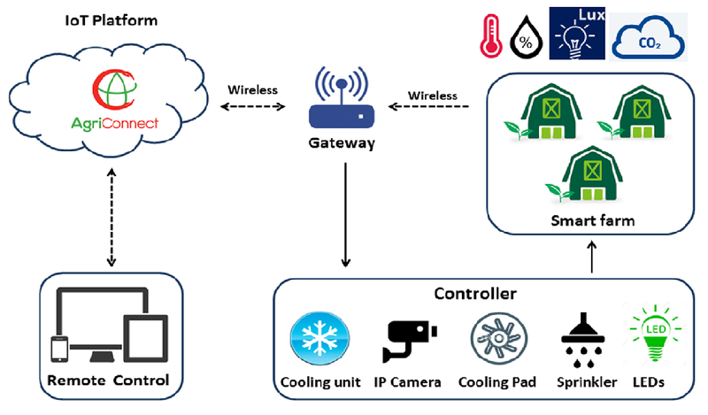

Hệ thống giám sát và điều khiển nhà lưới là một hệ thống tự động hoá sử dụng công nghệ thông tin vào nhà lưới thông minh để giám sát, quản lý và điều khiển hoạt động của các thiết bị điện trong nhà lưới. Hệ thống này giúp tăng khả năng phát hiện sự cố, nâng cao hiệu suất hoạt động và giảm thiểu tình trạng hao hụt khi gieo trồng.

Nhóm làm hệ thống này nhằm với mục tiêu chính là giám sát và điều khiển nhà lưới nâng cao hiệu quả hoạt động của nhà lưới, bảo đảm an toàn và ổn định cho hệ thống, đáp ứng nhu cầu sử dụng thực phẩm sạch, an toàn của khách hàng một cách đáng tin cậy và hiệu quả nhất.
Cụ thể, hệ thống giám sát và điều khiển nhà lưới được thiết kế để đạt được các mục tiêu sau:
1.Giảm thiểu sự cố và thời gian gián đoạn: Hệ thống giám sát và điều khiển nhà lưới được thiết kế để theo dõi và phát hiện sự cố, cũng như thực hiện các biện pháp khắc phục để giảm thiểu thời gian gián đoạn và giúp nhà lưới hoạt động một cách ổn định.
2.Tăng cường hiệu quả hoạt động: Hệ thống giám sát và điều khiển nhà lưới cung cấp các dữ liệu, thông tin và đánh giá hoạt động của nhà lưới, giúp nhân viên kỹ thuật có thể đưa ra các quyết định chính xác và nhanh chóng để cải thiện hiệu quả hoạt động của hệ thống.
3.Tối ưu hóa sử dụng tài nguyên: Hệ thống giám sát và điều khiển nhà lưới giúp nhân viên kỹ thuật tối ưu hóa việc sử dụng tài nguyên điện,nước,phân bón,... để hệ thống và giảm thiểu các tác nhân gây hại cây trồng.
4.Cung cấp thực phẩm sạch và an toàn: Hệ thống giám sát và điều khiển nhà lưới giúp đảm bảo an toàn vệ sinh thực phẩm cũng như giảm thiểu những sự cố ngoài ý muốn và đảm bảo cung cấp các thực phẩm luôn tươi ngon và an toàn cho sức khỏe người tiêu dùng.